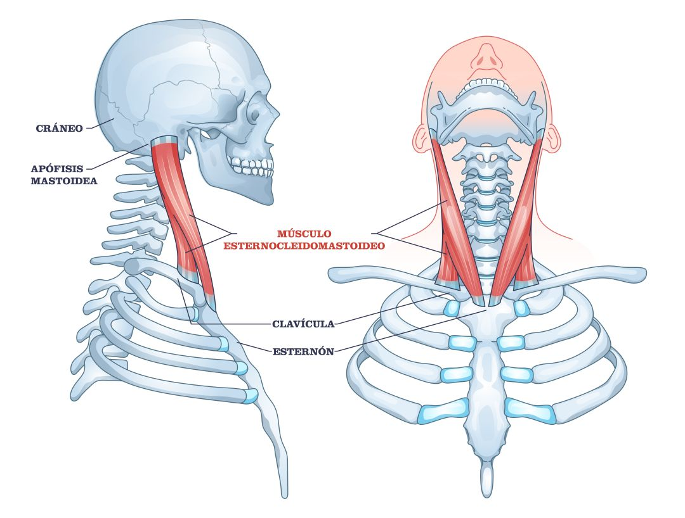

Músculos
- Frontal
- Orbicular de los párpados
- Orbicular de los labios
- Esternocleidomastoideo
El músculo frontal, también conocido comúnmente como el vientre frontal del músculo occipitofrontal, es un músculo de la expresión facial que forma parte del grupo de los músculos del cráneo. El músculo frontal no tiene inserciones óseas; en su lugar, se adhiere a la fascia superficial de las cejas y se fusiona con músculos adyacentes (músculo prócer, corrugador superciliar, orbicular del ojo) en su porción anterior, mientras que asciende para unirse a la galea aponeurótica (aponeurosis epicraneal) en su porción posterior. Las funciones del músculo frontal incluyen: tirar de la piel cabelluda hacia adelante, arrugar la frente y elevar las cejas. Está inervado por los ramos temporales del nervio facial.

El músculo orbicularis oculi, situado justo debajo de la piel del párpado, es un músculo similar a un
esfínter dispuesto concéntricamente alrededor de los párpados superior e inferior. La función principal
del músculo es cerrar los párpados, y también ayuda con el drenaje lagrimal.
Éste cuenta mayormente con fibras de tipo II (fibras de contracción rápida), que le permiten proteger el
ojo.

Actúa como el músculo del esfínter a la abertura oral. Las fibras profundas del oris orbicular están orientadas horizontalmente y actúan para comprimir los labios y proporcionar la función del esfínter (permite el paso de fluídos por el orificio de la boca), mientras que las fibras superficiales son responsables de movimientos más finos.

El músculo esternocleidomastoideo es un músculo que pasa oblicuamente por el lado del cuello. Es grueso y estrecho en su parte central, pero más ancho y delgado en sus extremos. Y es de función bilateral, al mover la cabeza hacia un lado, contraemos uno y estiramos otro. Esternocleidomastoideo se refiere a: "esterno" que proviene del esternón, "cleido" que también tiene conexión con la clavícula y "mastoideo" que se origina en la apófisis mastoide.
